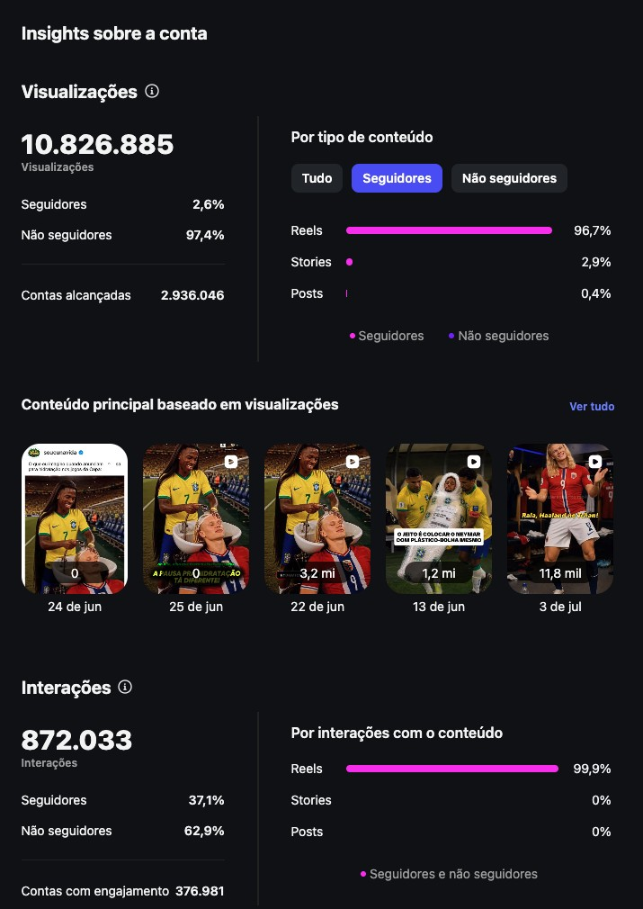

Eu já faço os virais do XABLAU. Agora quero ensinar no Real Oficial.
Sou formado em cinema, criador de conteúdo de IA e editor de vídeo. Os memes de outubro que fiz com o XABLAU passaram de 2,7 milhões de views. Entendo de roteiro, de linguagem audiovisual e de como um vídeo segura a pessoa até o fim, e sei explicar isso de um jeito que qualquer um entende.
Disponível para começar agora · Resposta rápida no WhatsApp

O formato que o Real Oficial domina, eu já faço
Memes virais de outubro · XABLAUTroca de personagem, timing de meme e edição pensada para o feed. Três vídeos feitos com o XABLAU, publicados em outubro.
Validado por quem já publicou
Memes de futebol que viralizamConteúdo que saiu do meu computador e foi ao ar em perfis que não publicam qualquer coisa: CazéTV, TNT Sports e o influencer Gabriel Laranjeira.

Linguagem de cinema aplicada à IA
CinematográficosPublicidade, evento de luxo, storytelling emocional e peça editorial. Roteiro, geração, direção de cena e edição feitos por mim, do conceito à entrega.
Viva América, agência de migração
Criativo de aquisição construído para converter. Ritmo, clareza de mensagem e retenção, a mesma base que eu ensinaria para quem quer fazer vídeo que funciona.
Clube do Franchising, Alphaville (SP)
Chamada para um jantar de luxo voltado aos grandes franqueadores do Brasil. Um convite com cara de evento premium, feito com IA.
Eduardo Schroeder, sócio-fundador da Cheirin Bão
Peça biográfica com clonagem de voz e vídeo gerado por IA, em que o Eduardo encontra uma versão mais jovem de si mesmo. Roteiro, geração, direção de cena e edição feitos por mim.
A taça da Copa do Mundo
Peça vertical gerada inteiramente por IA, com clima de comercial e acabamento de cinema.
O próximo nível está próximo pra alcançarmos!
Filme com cara de comercial de marca grande é cinema antes de ser IA: roteiro, decupagem, ritmo, luz e direção de cena. É exatamente a minha formação, e é isso que transforma um amontoado de takes bonitos em uma peça épica.
Já levo essa linguagem para os meus cinematográficos, estou me aprofundando com o curso do @liloforte e tenho total capacidade de produzir e ensinar esse formato no Real Oficial, do roteiro ao último corte.
Estou fazendo o curso do @liloforte
Sempre estudandoEstou comprando o curso do @liloforte, criador dos vídeos do Cariani, justamente para chegar no nível cinematográfico que o Real Oficial quer ensinar. Quem vai ser professor precisa continuar sendo aluno.
Formado em cinema, nativo em IA, pronto para ensinar.
Quem é o BritoSou Anderson Brito, criador de conteúdo de IA e editor de vídeo em São Paulo. Hoje sou criador de conteúdo da Doti, empresa do Conrado de Sá (@condzxyz).
Fui editor de vídeo da Escola do Franchising, do grupo A Trinca (Flávio Augusto, Joel Jota e Caio Carneiro) e dos donos da Cheirin Bão, a maior rede de cafeterias gourmet do Brasil. Lá eu editava vídeos para várias marcas sócias do grupo e aulas de marketing e vendas, além de gerar vídeos de IA para os donos. Também tive conteúdos distribuídos por CazéTV e TNT Sports.
De onde eu venho
TrajetóriaEmpresa do Conrado de Sá (@condzxyz). Criação de conteúdo com IA generativa para as redes.
Ecossistema do grupo A Trinca (Flávio Augusto, Joel Jota e Caio Carneiro) e dos donos da Cheirin Bão, a maior rede de cafeterias gourmet do Brasil, fundada por Eduardo Schroeder e Wilton Bezerra. Edição de vídeos para várias marcas sócias do grupo, de aulas de marketing e vendas e geração de vídeos de IA para os donos, incluindo os projetos deste portfólio.
Atuação junto à vice-presidência da Fundação Getulio Vargas, no ambiente de formação e conteúdo educacional. Base direta para quem vai dar aula.
Linguagem audiovisual e roteiro de um lado, estratégia e mercado do outro. Também atuo como fotógrafo profissional.
Em uso diário, sem curva de aprendizado
FerramentasNão é lista de currículo. É o que já está rodando em produção.